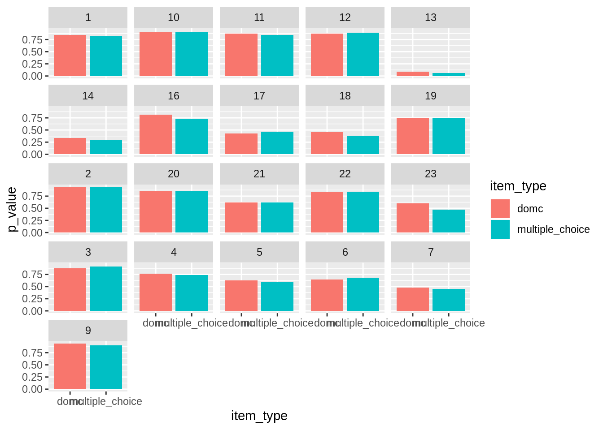

5 Recall VS Deduction
In this chapter we will look at some differences between recall and deduction items on a Harry Potter assessment.
library(dplyr)##
## Attaching package: 'dplyr'## The following objects are masked from 'package:stats':
##
## filter, lag## The following objects are masked from 'package:base':
##
## intersect, setdiff, setequal, unionlibrary(readr)
library(knitr)
library(ggplot2)
library(lemon)
library(stringr)
setwd_thisdir <- function () {
this.dir <- dirname(parent.frame(3)$ofile)
setwd(this.dir)
}
hp_data = read_csv('data/domc_order_difficulty/Full Responses After Exclusions.csv')## Parsed with column specification:
## cols(
## delivery_id = col_character(),
## item_id = col_character(),
## item_type = col_character(),
## item_total_seconds = col_double(),
## score = col_integer(),
## points_possible = col_integer(),
## key = col_character(),
## option_presented = col_character(),
## response = col_integer(),
## item_component_type = col_character(),
## item_component_seconds = col_double(),
## start_time = col_datetime(format = ""),
## end_time = col_datetime(format = "")
## )hp_clean = hp_data %>% filter(item_type == 'domc' | item_type == 'multiple_choice', item_component_type == 'domc_option' | item_component_type == 'final', !grepl('Survey', hp_data$item_id)) %>% group_by(delivery_id, item_id) %>% mutate(option_order = paste0(option_presented, collapse = ""))
recall <- c("1", "2", "3", "4", "5", "6", "7", "8", "9", "10", "11", "12")
deduction = c("13", "14", "15", "16", "17", "18", "19", "20", "21", "22")
hp_clean$deduction <- ifelse(grepl(paste(deduction,collapse="|"), hp_clean$item_id),1,0)
hp_items = hp_clean %>% group_by(item_id, item_type) %>% summarize(p_value = mean(score), count = n(), deduction = mean(deduction,na.rm=TRUE))
hp_items$item_number = str_extract(hp_items$item_id, "[0-9]+")5.1 Some Graphs
Here is the difference in p-value between DOMC and multiple choice for the same items.
ggplot(hp_items, aes(x=item_type, y=p_value, fill=item_type)) + geom_bar(stat="identity") + facet_wrap(~item_number)
Here is the difference in p-value between DOMC and multiple choice for the same items.
just_mc = hp_items %>% filter(item_type == 'multiple_choice')
just_domc = hp_items %>% filter(item_type != 'multiple_choice')
differences = hp_items %>% group_by(item_type) %>% summarize(average_p_value = mean(p_value, na.rm=TRUE))
kable(differences)| item_type | average_p_value |
|---|---|
| domc | 0.6933272 |
| multiple_choice | 0.6741205 |
The total difference in p-values between item_types is -0.0192067.
Multiple Choice items appear to be slightly more difficult.